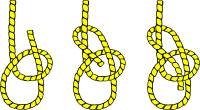
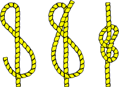
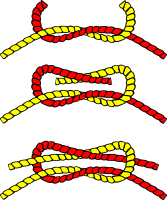

Useful Knots LLC.
Bowline
January 27, 2014
by Misty C. Shore | misty.c@shore.com

The bowline is an ancient and simple knot used to form a fixed loop at the end of a rope. It has the virtues of being both easy to tie and untie; most notably, it is easy to untie after being subjected to a load. Read more…
Figure Eight Knot
October 16, 2013
by Chris P. Bacon | chris.p@bacon.com

It is very important in both sailing and rock climbing as a method of stopping ropes from running out of retaining devices. Like the overhand knot, which will jam under strain, often requiring the rope to be cut, the figure of eight will also jam, but is usually more easily undone than the overhand knot. Read more…
Square Knot
November 7, 2013
by Ted E. Bear | teddy@bear.com

The reef knot or square knot is an ancient and simple binding knot used to secure a rope or line around an object. Although the reef knot is often seen used for tying two ropes together, it is not recommended for this purpose due to potential instability of the knot. Read more…
Did You Know?
When lines are of unequal diameter or rigidity it is necessary for security to double the sheet bend by making an additional round turn below the first and again bringing the working end back under itself. The free ends should end up on the same side of the knot for maximum strength. Learn more about the double sheet bend…
Books About Knots
Ashley Book of Knots
by Clifford Ashley
Ashley says, This book describes every practical knot, what it looks like, where it comes from, and how to tie it. The book includes 4,000 knots, with all the varieties of shipboard knots as well as knots used by butchers, steeplejacks, electric linesmen, knitters, cobblers, surgeons, poachers1 and cattle rustlers.
© Useful Knots LLC. All rights reserved.
Thanks to Wikipedia for the helpful articles about the bowline, the figure-eight, and the square knots
Illustrations courtesy of OpenClipArt.org
This site built with valid HTML and CSS.
To link to this page, paste the following code into your page: <a href="http://usefulknots.com/" title="Useful Knots Inc.">Useful Knots Inc.</a>
With thanks, also to The Dangerous Book for Boys by Conn Iggulden, and Hal Iggulden.